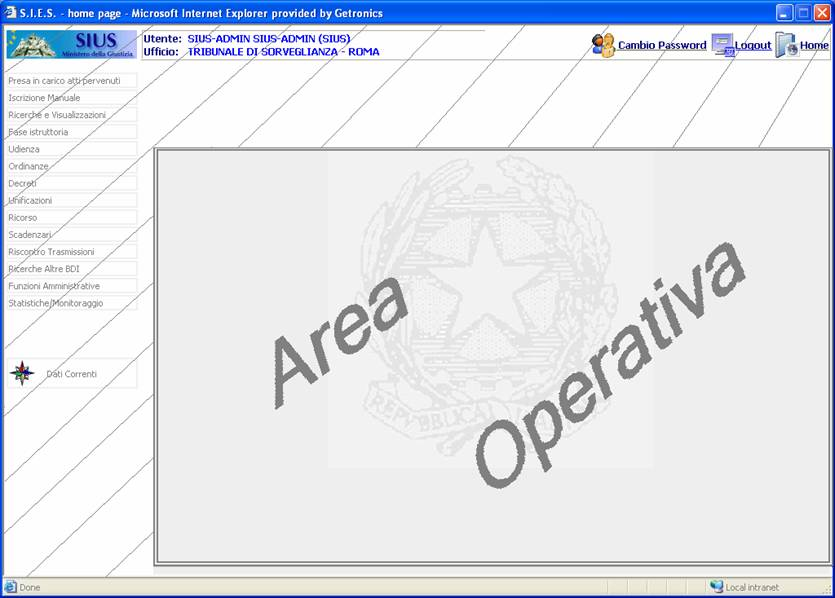
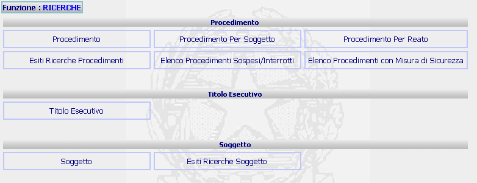
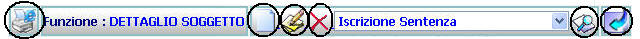
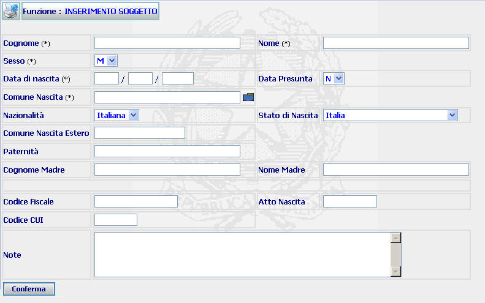
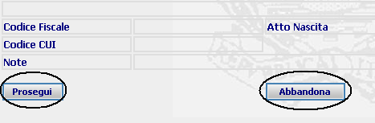
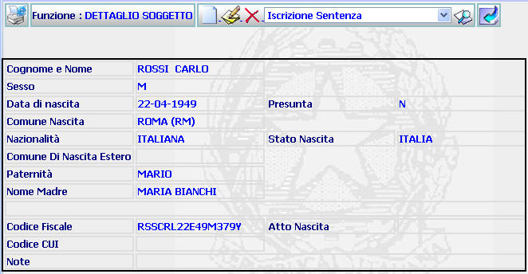

Menu, nel caso in cui la funzione prescelta contiene sottofunzioni relative alla funzione stessa, come, ad esempio:
Area Operativa: si identifica con quella porzione di area dell'applicazione in cui vengono visualizzati oggetti applicativi relativi ad operazioni eseguite dall'utente.
In particolare in quest'area saranno presenti generalmente i campi di input ed output delle varie funzioni che l'utente ha deciso di effettuare.
LE MASCHERE VIDEO
L'area operativa è la seguente :

In quest'area si potranno presentare all'utente uno o più dei seguenti elementi applicativi:
|
Menu, nel caso in cui la funzione prescelta contiene sottofunzioni relative alla funzione stessa, come, ad esempio: |

|
Pulsanti di vario genere, sia caratteristici della varie funzione in esecuzione che Pulsanti di Uso Comune, come ad esempio: |

|
Menù a Tendina, dal quale è possibile lanciare l'esecuzione di funzioni correlate a quella che si sta eseguendo, come ad esempio: |

|
Campi di Input che permettono all'utente di inserire nel sistema i dati richiesti dalla funzione che si sta eseguento, come ad esempio: |

|
Bottoni vari che permettono all'utente di eseguire l'operazione riportata sul pulsante stesso come ad esempio: |

|
Maschere di dettaglio che visualizzano all'utente i dati che il sistema ha memorizzato a fronte dell'operazione appena eseguita dall'utente, come ad esempio: |
